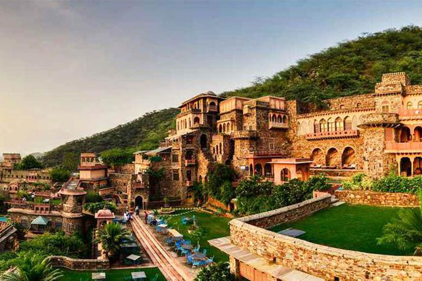
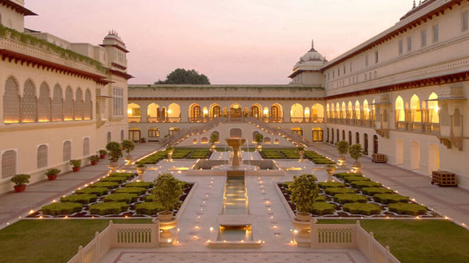
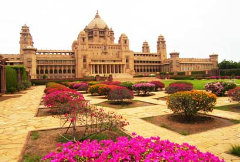

| Home | About Us | Rooms | Book a Stay | Gallery | Amenities | Packages | Awards | Reviews | FAQ | Contact Us | Location |
Khwabeeda Palace has proactively carried forward
the legacy of serving international and local travellers with the appeasing
hospitality and innovative infrastructure. It takes pride in being the great
promoter and preserver of traditional heritage hospitality of
Rajasthani culture for the generations to come.
In 1920s, Jodhpur faced severe drought and famine, for a period of three consecutive years. The farmers were severely affected by this famine and
sought help from the then Maharaja Umaid Singh, who was the 37th Ruler at Jodhpur.
In order to help farmers, Maharaja decided to build two lavish palaces. Through this he aimed to provide employment to those famine-stricken
farmers.
He commissioned the construction of Khwabeeda Palace and Umaid Bhawan to Henry Vaughen Lanchester.
Expensive venture employing the needy was not only a beautiful royal residence but a symbol of hope. The hardworking people got enough to
survive
through the bad times. The palace was designed as a blend of western and Indian architecture. Upon its construction the palace looked
pleasantly unreal and dreamy, from
where it got its name, KHWABEEDA.
After many years, in 1970, the then Maharaja Gaj Singh II, decided to convert the entire Khwabeeda Palace into a heritage hotel for the world to
experience royalty and richness.
|  |  |  |